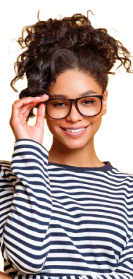

Veja o mundo com as lentes mais tecnologicas do mercado, seja claro ou escuro, você escolhe a ótica do seu mundo.
Tenha uma nova visão do seu cotidiano.

Controle
via celular

Tecnologia
Sustentável
Design
Personalizável

ESTILOS ÚNICOS

AVALIAÇÕES DE CLIENTES
Incrível, agora meu mundo pode ir de escuro, cinza e triste para claro e ilumindado com um clique! Obrigado, Freedon Lents!
Diogo A.
Minha experiência com a Freedom Lens está sendo muito boa! Agora não preciso mais me preocupar em quando vou sair de casa e o sol está forte, a adaptação da lente funciona de forma perfeita. Só tenho um feedback, após cair de skate, o óculos me machucou em minha sobrancelha, acho que seria muito viável ser criado uma "Freedom Contact Lenses" .
Felipe F.